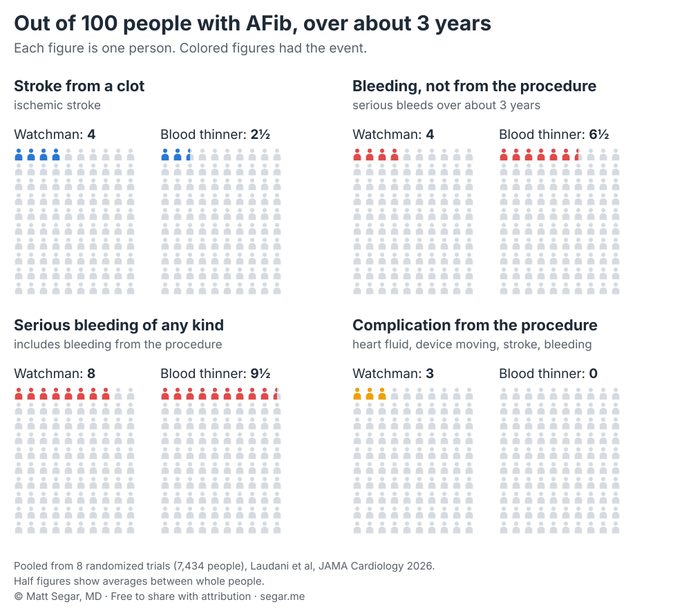

Watchman vs. Blood Thinners for AFib: Stroke and Bleeding Risk Out of 100
 By Matthew W. Segar, MD, Cardiac Electrophysiologist, Ascension St. Vincent · Last reviewed
By Matthew W. Segar, MD, Cardiac Electrophysiologist, Ascension St. Vincent · Last reviewed
Need an appointment? Call Carmel (317) 338-6666 or New Castle (765) 521-1461. Emergency: call 911.
Watchman is a small implant that seals off the pocket of the heart where most AFib clots form. In randomized trials, about the same number of people had a stroke or a serious bleed over 3 years with Watchman as with a blood thinner. The trade-off: Watchman led to fewer bleeds after the procedure but about 1 to 2 more strokes from clots per 100 people, plus a small up-front procedure risk. A blood thinner remains the first choice for most people. Watchman fits best when you cannot stay on a blood thinner long term.
What is Watchman?
In AFib, the upper chambers of the heart quiver instead of squeezing. Blood can pool and clot in a small pouch off the left upper chamber called the left atrial appendage. Most AFib strokes start with a clot from this pouch.
A blood thinner (anticoagulant) such as apixaban (Eliquis), rivaroxaban (Xarelto), or warfarin keeps clots from forming anywhere in the body. Watchman takes a different approach. It is a small, umbrella-shaped implant that plugs the opening of the appendage. Over a few weeks, heart tissue grows over it and seals the pouch. A similar device, Amulet, works the same way. This page uses "Watchman" for both.
Neither treatment is risk-free. Blood thinners cause bleeding. Watchman requires a procedure, does not seal off every clot source, and still needs some medicine afterward.
The numbers, out of 100 people
The best evidence comes from 8 randomized trials that assigned about 7,400 people with AFib by chance to Watchman or a blood thinner. A 2026 analysis in JAMA Cardiology pooled all of them. On average, people were 75 years old and were followed for about 3 years.

| Out of 100 people, about 3 years | Watchman | Blood thinner | What it means |
|---|---|---|---|
| Stroke from a clot | about 4 | about 2½ | About 1 to 2 more with Watchman. This difference was statistically significant. |
| Bleeding stroke | about 1 | about 1 | No difference |
| Any stroke | about 5 | about 4 | Not a significant difference |
| Serious bleeding after the procedure period | about 4 | about 6½ | About 2 to 3 fewer with Watchman |
| Serious bleeding of any kind, including the procedure | about 8 | about 9½ | Not a significant difference |
| Death from any cause | about 13 | about 15 | Not a significant difference |
| Problem from the procedure itself | about 3 | none | One-time risk at the start |
Numbers are pooled from the 8 trials and rounded. "Serious bleeding" means bleeding that needed a transfusion, a hospital stay, or surgery, or bleeding in a critical place such as the brain.
How to read this. Treat 100 people with Watchman instead of a blood thinner, and over 3 years you would expect about 1 to 2 more strokes from clots and about 2 to 3 fewer bleeds after the procedure period. The procedure adds its own bleeding up front, so total serious bleeding ends up about the same. Overall stroke and survival were similar.
A stroke from a clot often causes lasting disability. The most common serious bleeds on a blood thinner come from the stomach or gut, and most can be treated. Bleeding in the brain is the exception. That difference in severity is one reason I weigh the extra strokes heavily.
The two newest trials
CHAMPION-AF (2026) enrolled 3,000 people who could safely take a modern blood thinner. They were younger and at lower bleeding risk than most people who get Watchman today. Over 3 years:
- Stroke from a clot: about 3 in 100 with Watchman and 2 in 100 with a blood thinner.
- Bleeding after the procedure, including smaller bleeds that needed medical care: about 11 in 100 with Watchman and 19 in 100 with a blood thinner.
- Serious bleeding including the procedure: about 6 in 100 in both groups.
- Death: about 5 in 100 in both groups.
The trial met its goal of showing Watchman was not worse on a combined measure of heart-related death, stroke, and blood clots. Doctors still disagree on whether one more stroke per 100 people is an acceptable price for fewer bleeds.
CLOSURE-AF (2026) tested Watchman-type devices in older people (average age 78) at high risk of both stroke and bleeding, the group that most often gets the device in practice. The device did not prove as good as the best medical care. Strokes were about equal (about 3 per 100 people each year in both groups). Serious bleeding was not lower with the device: 7.4 vs. 6.2 per 100 people each year. Much of the device group's bleeding happened soon after the procedure. Critics point out that many patients received older devices and two antiplatelet drugs afterward, which raises bleeding risk.
Who should consider Watchman?
I think of Watchman as a good option when a blood thinner is not a long-term option. Examples:
- A serious bleed from a cause that cannot be fixed, such as recurring bleeding from blood vessels in the gut
- A prior bleed in or around the brain
- A condition that makes brain bleeding more likely, such as cerebral amyloid angiopathy
- Serious bleeding from repeated falls when the cause of the falls cannot be treated
U.S. guidelines rate Watchman as reasonable for people at moderate to high stroke risk who cannot take a blood thinner long term for a reason that cannot be reversed. For everyone else, including people who prefer to avoid lifelong medicine, the guidelines say it may be considered after careful discussion of the procedure risks. The guidelines also note there is far more evidence behind blood thinners.
A blood thinner is usually the better choice if you can take one without serious problems. Disliking pills or worrying about bleeding that hasn't happened is a reason to talk with me. On its own, it is not a reason to choose a procedure that led to more strokes from clots in trials.
What to expect
The procedure. You are asleep or deeply sedated. A thin tube goes through a vein in your groin and crosses into the left side of the heart. The device is placed using ultrasound and X-ray. It takes about an hour. Most people go home the same day or the next morning.
Medicine afterward. Most people take a blood thinner, sometimes with aspirin, for about 6 weeks to 3 months. An imaging test (an ultrasound through the esophagus or a CT scan) then checks the seal. If the seal looks good, most people switch to aspirin or another antiplatelet medicine. In CHAMPION-AF, about 5 in 100 people developed a clot on the device. That usually means going back on a blood thinner for a while.
Procedure risks. In the pooled trials, about 3 in 100 people had a problem from the procedure. Out of 1,000 people, these were:
- About 9 with fluid around the heart that needed draining
- About 9 with serious bleeding
- About 5 with a stroke
- About 5 whose device moved out of place
- About 1 death
Complication rates have fallen with newer devices. In a large U.S. registry of the current Watchman FLX, about 1 in 75 people had a major problem in the hospital.
Questions to ask before you decide
- What is my stroke risk with no treatment, and how much does a blood thinner lower it?
- Is there a fix for whatever makes a blood thinner hard for me, such as a different drug, a lower dose, or treating the source of bleeding?
- Which medicines will I take after Watchman, and for how long?
- How many of these procedures does my doctor's team do each year, and what are their complication rates?
Read more in my AFib overview.
Common questions
Will I be off all blood thinners after Watchman?
Not necessarily. Watchman changes which blood thinner you take more than whether you take one. Most people take an anticoagulant such as apixaban (Eliquis), sometimes with aspirin, for about 6 weeks to 3 months while heart tissue grows over the device. After an imaging test confirms a good seal, most people switch to aspirin or another antiplatelet medicine and stay on it long term. Antiplatelet medicines also thin the blood and also cause bleeding. Some people stay on an anticoagulant longer if a clot forms on the device or a leak remains.
Is Watchman better than a blood thinner?
Not for most people. In the largest trial of people who could take a modern blood thinner (CHAMPION-AF), Watchman met its goal of being not worse for a combined measure of heart-related death, stroke, and blood clots. It also had fewer bleeds after the procedure. It had more strokes from clots: about 3 in 100 with Watchman and 2 in 100 with the blood thinner over 3 years. Pooling all 8 randomized trials gives the same picture.
Can I just take aspirin instead?
Aspirin is a poor substitute. In the AVERROES trial of people who could not take warfarin, apixaban cut strokes by more than half compared with aspirin, and serious bleeding was about the same with both.
What if I stop taking my blood thinner?
Stopping a blood thinner without a plan raises your stroke risk. If side effects, cost, bleeding, or falls make it hard to keep taking one, tell me. There are often fixes, such as a different drug or dose, or treating the source of bleeding. If none of those work, Watchman becomes a reasonable option.
Does insurance cover Watchman?
Medicare covers it for people with a high enough stroke risk who can take a blood thinner for a short time but not long term. You first need a shared decision-making visit about the options, documented by a doctor who does not perform the procedure. Private plans vary. Check your own plan before scheduling.
Does Watchman help with AFib symptoms?
No. Watchman only lowers stroke risk. It does not change the heart rhythm, palpitations, or tiredness. Those need rate or rhythm treatment, such as medicine or ablation.
Make an appointment
I see patients with heart rhythm problems at Ascension Medical Group St. Vincent in Carmel and New Castle, Indiana. To schedule, use my Ascension page or call the office.
- Carmel Heart Care: (317) 338-6666
- New Castle Heart Care: (765) 521-1461
References
- Laudani C, et al. Catheter-based left atrial appendage closure vs oral anticoagulation in patients with atrial fibrillation: a systematic review and meta-analysis. JAMA Cardiol. Published online August 26, 2026. doi:10.1001/jamacardio.2026.2640
- Doshi SK, et al. Left atrial appendage closure or anticoagulation for atrial fibrillation (CHAMPION-AF). N Engl J Med. 2026;394:2083-2094. doi:10.1056/NEJMoa2517213
- Landmesser U, et al. Left atrial appendage closure or medical therapy in atrial fibrillation (CLOSURE-AF). N Engl J Med. 2026;394:1270-1280. doi:10.1056/NEJMoa2513310
- Wazni OM, et al. Left atrial appendage closure after ablation for atrial fibrillation (OPTION). N Engl J Med. 2025;392:1277-1287. doi:10.1056/NEJMoa2408308
- Reddy VY, et al. 5-year outcomes after left atrial appendage closure: from the PREVAIL and PROTECT AF trials. J Am Coll Cardiol. 2017;70:2964-2975. doi:10.1016/j.jacc.2017.10.021
- Connolly SJ, et al. Apixaban in patients with atrial fibrillation (AVERROES). N Engl J Med. 2011;364:806-817. doi:10.1056/NEJMoa1007432
- Joglar JA, et al. 2023 ACC/AHA/ACCP/HRS guideline for the diagnosis and management of atrial fibrillation. Circulation. 2024;149:e1-e156. doi:10.1161/CIR.0000000000001193
- Louisiana Blue. Medical Policy #00296: Percutaneous left-atrial appendage closure devices for stroke prevention in atrial fibrillation. Effective August 1, 2026. PDF
This page is general education, not medical advice, and does not create a doctor-patient relationship. It cannot replace an exam or an ECG. If you think you are having an emergency, call 911. This is my personal website, and the views here are my own. I also build health technology products, which are not promoted on this page. Watchman is a trademark of Boston Scientific. Amulet is a trademark of Abbott. This page is not affiliated with either company.